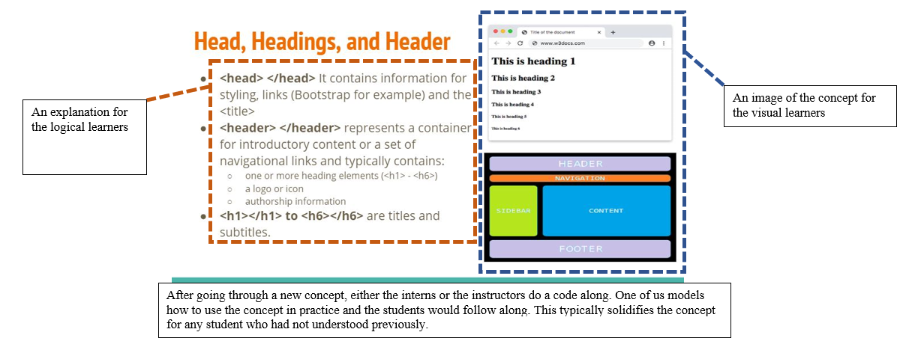
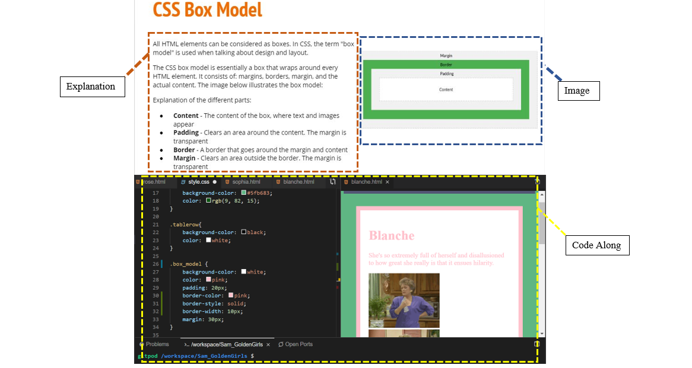
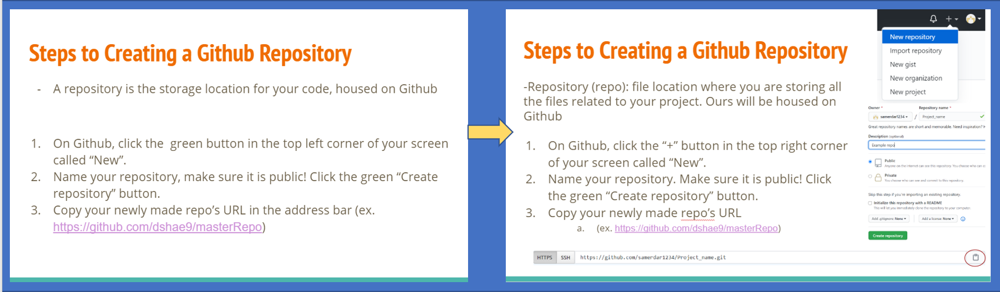

Pre-Program Preparation (2-weeks)
Constructing the materials needed to enable a positive student learning experience.
Self-Directed Learning
To ensure I was prepared for this internship, I was provided an overview of HTML, CSS, etc. I taught myself to use the requisite tools and created a reference website overnight.
Teaching Materials Design and Development
Before diving into the creation of tools to support the academic process, the other coding education interns and I reviewed existing Powerpoint decks from previous years as the rudimentary base for our teaching materials. Together, we diagramed the organizational flow of topics, topic relevance, ease in understanding, and completeness of logic within each slide.
Through this diagramming exercise, we each identified many areas for improvement. My team then worked asynchronously to make changes to the slide deck but reconvened to reevaluate those individual improvements and determine the most effective organization to ensure a positive learning environment from both a teaching and student perspective. Pictured below are a few samples of the slide improvements.
Slide Creation
These first two images are of slides that were not included in the original slide deck, but I ideated and added with assistance from the other interns to add clarity. All students have different styles of learning, so each new slide was created to accommodate as many learning styles as possible.

The slide shown to the left is now part of the HTML slide deck. In this presentation, we go over three concepts for the students which all sound similar but are very different. I suggested we add this slide to give a visual, singular representation of the differences between these three elements.

The slide shown to the left is now part of the CSS slide deck. The original slide deck did not mention the box model at all so I worked with the other interns to create this new slide to give students the ability to layout their websites in an attractive, professional manner. As you can see, this slide was also created with an accommodating explanation and image. Below the slide is an example of the corresponding code along that was presented along with the prepared slide.
Remodeling
In addition to creating new slides for clarity, I also remodeled the original slides to be consistent with the accommodative layout the newer slides possess. For the majority of the changed slides, images needed to be added, and the information needed to be rewritten.

Additionally, we created the academic program schedule, constructed assignments to re-enforce key skills, and researched new resources like cooler.co and typing.com to assist the students in basic skills and tools to help them develop their personal website development.